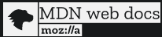

Rapport de ce que m'a appris ce projet en HTML et en CSS
Il faut savoir d'abord que je n'avais aucune connaissance dans ces 2 langauges avant d'avoir fait ce projet. Je me suis donc isolé pendant 2 jours afin de comprendre le mieux comment coder sous ses 2 languages
Mes deux sources de départs sont des guides de bases en HTML et CSS fait par Mozilla que l'on peux trouver ci-dessous.
Ces deux guides m'ont permis d'apprendre des commandes de bases pour au final pouvoir faire un site "banale".
Voici des exemples de commande de base et essentielle pour coder en HTML et en CSS:
En HTML :
- Les fonction "p" ou "h" permette d'écrire des titres ou des paragraphes
- D'autres fonction comme "strong" permet de mettre en avant un mot
- Les fonction "ul", "il", "ol" permette de faire des listes
- La fonction "a" est très utile et essentiel car elle permet de lié des URL vers d'autres sites ou lié un fichiers
- La fonction "img" est utilisé pour lié une image afin qu'elle apparaise sur la page
En CSS :
- Des fonctions comme "width", "margin", "border" ou "padding" permette la mise en forme d'une page (Dimensions, Bordures, Formes...)
- Les fonctions comme "color" ou "background-color" sont utilisé pour changer la couleur des paragraphes, titres et pour changer la couleur de fond d'une page.
- La fonction "font-family" permet de changer le police d'écriture et la fonction "font-size" changer la taille de la police
- La fonction "a" est aussi utilisé dans ce language pour mettre en forme l'accès à une URL ou fichiers...
Mon ressenti après utilisation des languages HTML et CSS :
L'HTML et le CSS sont des languages que je trouve personnellement très agréable à utilisé et simple a prendre en main. Le seule autre language a part le Terminal de Linux que nous avions utilisé en cours était le Python et je dois avouer avoir une bien plus grosse préférence envers le HTML et le CSS surement pour son but, son utilisation, sa facilité. Ce projet m'a permis de prendre connaissance de ces deux languages assez rapidement, le plus long aura été la mise en forme du site soit la partie CSS. Même si je connais à peine 10% de ces deux languages, Ce sont ce que je préfère